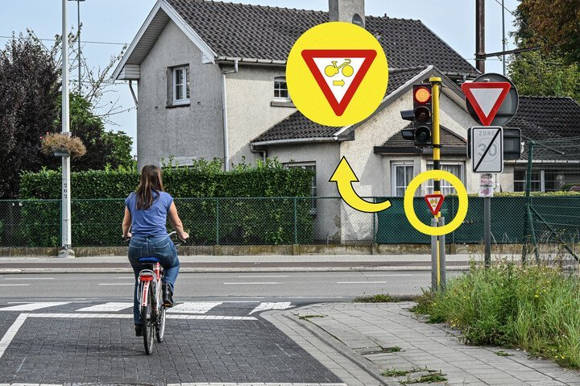

Je rijdt met de fiets en je wil rechts afslaan. Wat moet je doen?

- Ik stop voor het verkeerslicht.
- Ik fiets verder want ik heb voorrang.
- Ik fiets verder maar verleen voorrang aan de andere weggebruikers.
Verkeerslichten gaan boven de verkeersborden en de verkeersregels, maar het bord met de omgekeerde driehoek op de foto, laat fietsers toch toe om het rode of oranje licht in bepaalde omstandigheden voorbij te rijden. Je mag hier dus als fietser zonder te stoppen voorbij om rechts af te slaan, maar je moet wel voorrang verlenen aan de andere weggebruikers.